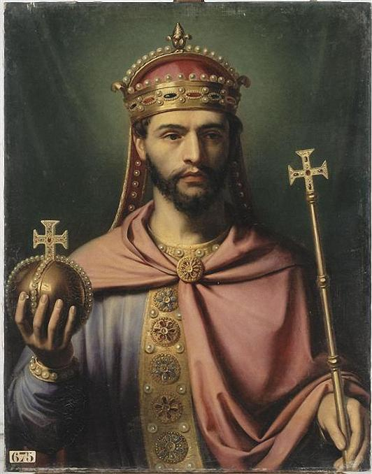

|
CC NUMISMATICS |
Close window | ||||||||
| AD 0819 - Empire carolingien - Denier - Louis Ier, dit « le Pieux » (ou « le Débonnaire »): | |||||||||
| Period: | Moyen Âge ; Empire carolingien (800-924) ; Dynastie carolingienne (751-987) | ||||||||
| Ruler: | Louis Ier, dit « le Pieux » (ou « le Débonnaire ») (814-840) | ||||||||
| Type: | Regular issue | ||||||||
| Obverse: | |||||||||
|
Design: Croix pattée, entourée d'un grènetis intérieur, le champ entouré d'un grènetis extérieur Director: - Engraver: - |
|||||||||
| Reverse: | |||||||||
|
Design: Croix pattée, entourée d'un grènetis intérieur, le champ entouré d'un grènetis extérieur Director: - Engraver: - |
|||||||||
| Thoughts: | |||||||||
Rare en l'état ; 36 exemplaires répertoriés (voir DepeyrotCarol#611) |
|||||||||
| Edge: | Plain | ||||||||
| Alignment: | Variable (↺, 01h) | Technique: | Hammered | ||||||
| Rarity: | R2 | Material: | Silver | ||||||
| Year: | 819 (not dated) | Fineness: | 917 | ||||||
| Country: | Empire carolingien | Weight (g): | Expected: 1.7 | ||||||
| Issuer: | Empire carolingien | Shape: | Round (Irregular) | ||||||
| Value: | 1 | Diameter (mm): | Measured: 20; Expected: 20 | ||||||
| Unit: | Denier (794-843) | Thickness (mm): | - | ||||||
| Mint: | Melle, Deux-Sèvres | Mintage: | |||||||
| Mint mark: | None | Emission period: | 819-822 | ||||||
| Status: | Ordered | Quality: | Circulating (demonetised) | ||||||
| Grade: | AU58 (PCGS 50536285) | Variety: | None | ||||||
| References: | Gariel2_1#70; ProuCarol#722var; DepeyrotCarol#611; MG#400; MEC1#762 | ||||||||
| Varieties: | |||||||||
None |
|||||||||
| Pedigree: | |||||||||
The CC Collection, bought from CGB Numismatics Paris on their online shop (https://www.cgb.fr/boutiques-numismatiques.html) on 27 March 2026 (see https://www.cgb.fr/louis-ier-le-pieux-ou-le-debonnaire-denier-sup58,bca_1114387,a.html) Ex MDC Monaco Auction 16 on 4 June 2025, Lot 1153, Starting price: EUR 500, Price realised: Hammer price: EUR 500 + Buyer's premium (20% subject to 20% VAT, that is 24%): EUR 120 = EUR 620 ~ GBP 522 (see https://www.biddr.com/mdcmonaco/auction?a=5671&l=6962626) |
- | ||||||||
| Monetary system: | |||||||||
Les complications politiques du règne de Louis Ier, dit « le Pieux » ou « le Débonnaire », ne se reflètent pas dans sa monnaie. La majeure partie de cette monnaie se compose de deniers et d'oboles frappés entre 814 et 840. Il y avait en outre : de très rares deniers légers correspondant par leur poids et leur type aux deniers de Charlemagne de la classe 2 mais au nom de Louis, qui ont été frappés en 781 ; des solidi d'or qui appartiennent aux premières années du règne ; et des denarii d'argent papaux-impériaux frappés à Rome. Les deniers réguliers donnent tous à Louis son titre impérial complet (HlVdoVVICVs IMp) et forment trois classes principales, caractérisées pour la classe 1 (frappée entre 814 et 819) par un buste comme type à l'avers, pour la classe 2 (frappée entre 819 et 822) par le nom de l'atelier monétaire dans le champ, et pour la classe 3 (frappée entre 822 et 840) par un temple entouré d'une légende « Christiana religio ». Il y a en plus quelques rares deniers avec soit un temple et une marque d'atelier monétaire, soit une croix des deux côtés de la monnaie, avec le nom du roi d'un côté et celui de l'atelier monétaire de Melle ou de Toulouse de l'autre côté. Les premiers d'entre eux sont soit des contrefaçons, soit des pièces de monnaie qui datent des années après la mort de Louis, lorsque le type au temple a été continué aux Pays-Bas. Les autres représentent probablement une variété de la classe 2 résultant d'une ambiguïté dans les instructions envoyées aux ateliers monétaires de Melle et de Toulouse. |
|||||||||
| Historical notes: | |||||||||
Louis Ier (naissance en 778 à Cassinogilum, dont la localisation est incertaine, soit Casseuil près de Bordeaux, Chasseneuil-du-Poitou dans la Vienne ou encore Casseneuil en Lot-et-Garonne ; avènement le 28 janvier 814 ; mort le 20 juin 840 dans une île du Rhin près de Mayence)
(To the right) Vue d'artiste de Louis Ier, empereur d'Occident, peinte par Jean-Joseph Dassy (1791-1865) vers 1837. Cette œuvre fait partie d'une série de portraits, commandée par Louis-Philippe entre 1836 et 1838 afin d'enrichir les collections du Musée historique de Versailles. Louis Ier, dit « le Pieux » (ou « le Débonnaire »), est le plus jeune des trois fils de Charlemagne, dit « le Grand » (entre 742 et 748-814 ; r. 768-814) et de sa seconde épouse Hildegarde de Vintzgau (758-783). En 781, Charlemagne installe ses trois fils comme successeurs : Charles, dit « le Jeune » (772-811) comme roi des Francs, Pépin (777-810) comme roi d'Italie, et Louis (778-840) comme roi d'Aquitaine. Ses deux frères étant morts avant lui, Louis succède à son père à sa mort en 814 comme empereur d'Occident. En 815 les députés de Calaris (Cagliari) viennent mettre la Sardaigne et sa capitale sous la protection des Francs. Le pape Léon III (vers 750-816) étant mort, son successeur Étienne IV (vers 770-817) fait prêter par les Romains serment de fidélité à Louis immédiatement après sa consécration le 22 juin 816. Dès 817 par l'Ordinatio Imperii, Louis associe à l’Empire ses fils de son union avec Ermengarde de Hesbaye (778-818). Il associe son fils aîné Lothaire Ier (795-855) comme co-empereur, et le désigne comme son héritier. Ses deux autres fils Pépin Ier (797-838) et Louis, dit « le Germanique » (806-876), reçoivent des territoires restreints et subordonnés : Pépin Ier, le cadet, reçoit le duché d'Aquitaine, celui de Vasconie et la marche de Toulouse ainsi que quatre comtés (celui de Carcassonne, en Septimanie, et ceux d'Autun, d'Avallon et de Nevers, en Bourgogne) ; et Louis « le Germanique » , le benjamin, la Bavière, ainsi que la Carinthie, la Bohême, les Avares et les Slaves, qui sont à l’orient de la Bavière. En agissant ainsi, Louis « le Pieux » se prononçait contre l'ancienne conception de la monarchie franque telle que l'avaient pratiquée les Mérovingiens et en faveur de la nouvelle conception ecclésiastique de l'Empire. Tout le reste de la Gaule et de la Germanie, ainsi que Rome et la seigneurie sur le royaume d'Italie sont le lot de Lothaire Ier. Ce partage est juré par les chefs francs à l’assemblée de Nimègue en 821. Les Bretons s'étaient soulevés sous la conduite d'un roi nommé Morvan (?-819), ils sont vaincus et Morvan tué en 819. La même année, après la mort d’Ermengarde de Hesbaye, Louis « le Pieux » épouse Judith de Bavière (vers 797-843). Le 13 juin 823, Judith de Bavière accouche d'un fils qui sera Charles II, dit « le Chauve » (823-877 ; r. 843-877). Plusieurs tribus slaves se soumettent à l'empire, dont les limites se trouvent ainsi reculées jusqu’à la Morava et aux confins des Bulgares. En 822, les Bretons se révoltent à nouveau, sous les ordres de Wiomarc'h (?-822). Ils sont vaincus, Wiomarc'h est tué et Louis « le Pieux » soutiendra alors Nominoë (vers 800-851) comme envoyé de l'empereur en Bretagne. En 820 le comté de Barcelone avait été réuni au marquisat de Septimanie en faveur du duc Bernhard (795-844), fils de Guilhem de Gellone, surnommé « le Grand » (et connu comme Guillaume-au-Court-Nez), pour qui Louis « le Pieux » avait détaché la Septimanie de l’Aquitaine. En 826 les Wisigoths s'emparent de la Catalogne centrale et les Marches d'Espagne se trouvent réduites à Barcelone, Girone, Impurias, Urgel, Puycerda et quelques forts dans la montagne. En même temps les Bulgares s'emparent de la Basse-Pannonie et de l'Esclavonie entre la Drave et la Save. Au mois d'août 820, au plaid (assemblée) général de Worms, Louis « le Pieux », au mépris du pacte de partage de 817, crée pour son fils Charles un royaume composé de l'Alémanie jusqu'à la rive orientale de la Reuss, de la Bourgogne transjurane (de la Reuss au lac de Lucerne et au Jura), de la Rhétie et de l’Alsace. Les trois frères aînés se révoltent, Charles est dépouillé de sa royauté et Lothaire Ier prend le pouvoir effectif, dont son père n’a plus que le nom. En 830, au plaid général d'automne tenu à Compiègne, Louis « le Pieux », appuyé par Pépin Ier et Louis « le Germanique », reprend le pouvoir, et le nom de Lothaire Ier est retranché des actes publics où il figurait depuis treize ans. En 832, l'empereur Louis « le Pieux » enlève l'Aquitaine à Pépin Ier pour la donner à Charles. En 833, les trois frères se révoltent à nouveau, réclamant le retour au partage de 817 ; Louis « le Pieux » marche contre eux ; abandonné par son armée tout entière, il est fait prisonnier, ainsi que le jeune Charles, est déclaré déchu et Lothaire Ier proclamé seul empereur. Mais l’année suivante, Louis « le Germanique » et Pépin Ier, fatigués du joug de Lothaire Ier, se réunissent contre lui, et rendent à leur père le trône et la puissance impériale. Lothaire Ier obtient son pardon, à la condition de ne plus sortir de l'Italie qui lui est laissée avec la Marche de Frioul (Carinthie, Styrie et Carniole). En 835, à la suite de ces événements, l'empereur convoque un plaid général à Stremiacum (Crémieu) près de Lyon. Là un nouveau partage a lieu, duquel est exclu Lothaire Ier : à Pépin Ier, roi d'Aquitaine, est donnée toute la région entre Loire et Seine, avec vingt-huit cantons du nord-ouest de la Gaule. À la Bavière, lot de Louis « le Germanique », est ajoutée presque toute la Germanie et la contrée nord-est de la Gaule. Charles joint à son lot primitif l'Alémanie, la Bourgogne presque entière, la Provence, la Gothie et une grande partie du nord-est de la Gaule. En 837, l'empereur va tenir un grand plaid à Aix-la-Chapelle. Là le pacte de Stremiacum est révisé au profit de Charles, à qui sont données la Frise, la Batavie, toute la région située entre la Meuse, la Seine et la mer et celle située entre la Seine et la Loire. En 838, Louis « le Pieux » couronne Charles roi, lui donnant le Maine, et l'envoie pour régner entre Seine et Loire. Louis « le Germanique » se révolte, mais, abandonné par ses troupes, l’empereur lui enlève tous ses territoires, moins la Bavière. Pépin étant mort le 13 décembre 838, l'empereur offre à Lothaire Ier de partager tout l'empire avec Charles, moins la Bavière, laissée à Louis « le Germanique ». Lothaire Ier a dans son lot: l'Italie, la Germanie, la plus grande partie de l'Austrasie et la moitié orientale de la Bourgogne. Charles reçoit donc l’autre moitié de la Bourgogne à l'ouest du Rhône et de la Saône, la Neustrie tout entière, les cantons à l’ouest de la Meuse, l'Aquitaine, la Septimanie, la Marche d’Espagne et la Provence. Les Aquitains se révoltent et nomment roi, sous le nom de Pépin II, le fils aîné de Pépin Ier. L'empereur marche contre eux ; Clermont, Poitiers, beaucoup d’autres villes se soumettent et restent fidèles à Charles. Le parti national reste maître seulement des contrées montagneuses du sud de l’Aquitaine. Le 20 juin 840 Louis Ier, dit « le Pieux », meurt dans une île du Rhin près de Mayence. En mourant il envoie la couronne impériale à Lothaire Ier, en lui recommandant de garder sa foi à Charles. |
 |
||||||||
| References: | |||||||||
| Album* | Album, S. 2011. Checklist of Islamic Coins, 3rd edition. Santa Rosa: Stephen Album Rare Coins. | ||||||||
| Babelon1* | Babelon, E. 1885. Description Historique et Chronologique des Monnaies de la République Romaine, Vulgairement Appelées Monnaies Consulaires, Tome Premier. Paris: C. Rollin & Feuardent. | ||||||||
| Babelon2* | Babelon, E. 1886. Description Historique et Chronologique des Monnaies de la République Romaine, Vulgairement Appelées Monnaies Consulaires, Tome Deuxième. Paris: C. Rollin & Feuardent. | ||||||||
| Balog* | Balog, P. 1964. The Coinage of the Mamlūk Sultans of Egypt and Syria. New York: The American Numismatic Society. | ||||||||
| Bastien | Bastien, P. 1976. Le Monnayage de l'Atelier de Lyon. De la Réouverture de l'Atelier par Aurélien à la Mort de Carin (Fin 274-mi-285). Wetteren: Éditions Numismatique Romaine. | ||||||||
| BCV* | Sear, D. R. 2006. Byzantine Coins and their Values, 2nd edition, revised and enlarged. London: Spink & Son, Ltd. | ||||||||
| Blanchet1* | Blanchet, A. 1905. Traité des Monnaies Gauloises, Première Partie. Paris: Éditions Ernest Leroux. | ||||||||
| Blanchet2* | Blanchet, A. 1905. Traité des Monnaies Gauloises, Seconde Partie. Paris: Éditions Ernest Leroux. | ||||||||
| Boudeau | Boudeau, É. 2002. Boudeau II Féodales: Catalogue Général Illustré de Monnaies Provinciales. Paris: Éditions les Chevau-Légers. | ||||||||
| Bull | Bull, M. 2020. English Silver Coinage since 1649. London: Spink & Son, Ltd. | ||||||||
| C | Craig, W. D. 1976. Coins of the World, 1750-1850, 3rd edition. Racine: Western Publishing Company, Inc. | ||||||||
| Ciani | Ciani, L. 1926. Les Monnaies Royales Françaises de Hugues Capet à Louis XVI avec Indication de leur Valeur Actuelle. Paris: Jules Florange and Louis Ciani. | ||||||||
| Cohen1* | Cohen, H. 1880. Description Historique des Monnaies Frappées sous l'Empire Romain, Communément Appelées Médailles Impériales, Tome Premier, 2nd edition. Paris: C. Rollin & Feuardent. | ||||||||
| Cohen2* | Cohen, H. 1882. Description Historique des Monnaies Frappées sous l'Empire Romain, Communément Appelées Médailles Impériales, Tome Deuxième, 2nd edition. Paris: C. Rollin & Feuardent. | ||||||||
| Cohen3* | Cohen, H. 1883. Description Historique des Monnaies Frappées sous l'Empire Romain, Communément Appelées Médailles Impériales, Tome Troisième, 2nd edition. Paris: C. Rollin & Feuardent. | ||||||||
| Cohen4* | Cohen, H. 1884. Description Historique des Monnaies Frappées sous l'Empire Romain, Communément Appelées Médailles Impériales, Tome Quatrième, 2nd edition. Paris: C. Rollin & Feuardent. | ||||||||
| Cohen5* | Cohen, H. 1885. Description Historique des Monnaies Frappées sous l'Empire Romain, Communément Appelées Médailles Impériales, Tome Cinquième, 2nd edition. Paris: C. Rollin & Feuardent. | ||||||||
| Cohen6* | Cohen, H. 1886. Description Historique des Monnaies Frappées sous l'Empire Romain, Communément Appelées Médailles Impériales, Tome Sixième, 2nd edition. Paris: C. Rollin & Feuardent. | ||||||||
| Cohen7* | Cohen, H. 1888. Description Historique des Monnaies Frappées sous l'Empire Romain, Communément Appelées Médailles Impériales, Tome Septième, 2nd edition. Paris: C. Rollin & Feuardent. | ||||||||
| Cohen8* | Cohen, H. 1892. Description Historique des Monnaies Frappées sous l'Empire Romain, Communément Appelées Médailles Impériales, Tome Huitième, 2nd edition. Paris: C. Rollin & Feuardent. | ||||||||
| Conbrouse | Conbrouse, G. 1838. Description des Monnaies Royales de France, "Spécimen". Paris: H. Fournier & Cie. | ||||||||
| CRI | Sear, D. R. 1998. The History and Coinage of the Roman Imperators, 49-27 BC. London: Spink & Son, Ltd. | ||||||||
| CRR | Sydenham, E. A. and Forrer, L. S. 1952. The Coinage of the Roman Republic. London: Spink & Son, Ltd. | ||||||||
| CT | Churchill, R. and Thomas, B. 2012. The Brussels Hoard of 1908, The Long Cross Coinage of Henry III. London: A. H. Baldwin & Sons Ltd and The British Numismatic Society. | ||||||||
| Davies | Davies, P. J. 1982. British Silver Coins since 1816. Birmingham: Peter J. Davies. | ||||||||
| DeBelfort4* | de Belfort, A. 1894. Description Générale des Monnaies Mérovingiennes par Ordre Alphabétique des Ateliers, Tome IV : Monnaies Indéterminées – Supplément. Paris: Au Siège de la Société Française de Numismatique. | ||||||||
| DHJ | Hartill, D. 2011. Early Japanese Coins. London: New Generation Publishing. | ||||||||
| DOC1* | Bellinger, A. R. 1992. Catalogue of the Byzantine Coins in the Dumbarton Oaks Collection and in the Whittemore Collection, Volume 1: Anastasius I to Maurice, 491-602. Washington, D.C.: Dumbarton Oaks Research Library and Collection. | ||||||||
| DOC2_1* | Grierson, P. 1993. Catalogue of the Byzantine Coins in the Dumbarton Oaks Collection and in the Whittemore Collection, Volume 2, Part 1: Phocas and Heraclius, 602-641. Washington, D.C.: Dumbarton Oaks Research Library and Collection. | ||||||||
| DOC3_2* | Grierson, P. 1993. Catalogue of the Byzantine Coins in the Dumbarton Oaks Collection and in the Whittemore Collection, Volume 3, Part 2: Basil I to Nicephorus III, 867-1081. Washington, D.C.: Dumbarton Oaks Research Library and Collection. | ||||||||
| DLT* | de la Tour, H. 1892. Atlas de Monnaies Gauloises. Paris: E. Plon, Nourrit et Cie. | ||||||||
| DepeyrotCarol | Depeyrot, G. 2017. Le Numéraire Carolingien, Corpus des Monnaies, Quatrième édition augmentée. Wetteren: MONETA. | ||||||||
| DepeyrotCeltique5* | Depeyrot, G. 2005. Le Numéraire Celtique, V. Le Centre Parisien. Wetteren: MONETA. | ||||||||
| DT2 | Divo, J.-P. and Tobler, E. 1974. Die Münzen der Schweiz im 18. Jahrhundert. Zürich: Bank Leu & Co. AG and Luzern: Adolph Hesse AG. | ||||||||
| DT3 | Divo, J.-P. and Tobler, E. 1967. Die Münzen der Schweiz im 19. und 20. Jahrhundert. Zürich: Bank Leu & Co. AG and Luzern: Adolph Hesse AG. | ||||||||
| DyFeo1 | Duplessy, J. 2004. Les Monnaies Françaises Féodales, Tome I. Paris: Maison Platt. | ||||||||
| DyFeo2 | Duplessy, J. 2010. Les Monnaies Françaises Féodales, Tome II. Paris: Maison Platt. | ||||||||
| DyRoy1 | Duplessy, J. 1999. Les Monnaies Royales Françaises de Hugues Capet à Louis XVI (987-1793), Tome I : de Hugues Capet à Louis XII (987-1514). Paris: Maison Platt. | ||||||||
| DyRoy2 | Duplessy, J. 1999. Les Monnaies Royales Françaises de Hugues Capet à Louis XVI (987-1793), Tome II : de François Ier à Louis XVI (1515-1793). Paris: Maison Platt. | ||||||||
| D2* | Dieudonné, A. 1932. Catalogue des Monnaies Françaises de la Bibliothèque Nationale, Les Monnaies Capétiennes ou Royales Françaises, 2e Section (de Louis IX (saint Louis) à Louis XII). Paris: Éditions Ernest Leroux. | ||||||||
| F* | Cornu, J. 2022. Le Franc. Paris: Éditions les Chevau-Légers. Searchable at: https://www.lefranc.net. | ||||||||
| Fr* | Friedberg, A. L. and Friedberg, I. S. 2024. Gold Coins of the World: From Ancient Times to the Present. An Illustrated Standard Catalog with Valuations. Williston: Coin & Currency Institute. | ||||||||
| Gad | Pastrone, F. 2021. Monnaies Françaises, 1989-2021. Monaco: Éditions Victor Gadoury. | ||||||||
| GadEMP | Taillard, M. and Arnaud, M. 2014. Essais Monétaires & Piéforts Français, 1870-2001. Monaco: Éditions Victor Gadoury. | ||||||||
| GadRoy1 | Sombart, S. 2022. Monnaies Royales Françaises de Louis XI à Henri IV, 1461-1610. Monaco: Éditions Victor Gadoury. | ||||||||
| GadRoy2 | Pastrone, F. 2018. Monnaies Royales Françaises (de Louis XIII à Louis XVI), 1610-1792. Monaco: Éditions Victor Gadoury. | ||||||||
| Gariel2_1* | Gariel, E. 1884. Les Monnaies Royales de France sous la Race Carolingienne, Deuxième Partie. Strasbourg: Imprimerie Typographique de G. Fischbach. | ||||||||
| GCV1* | Sear, D. R. 1978. Greek Coins and their Values, Volume I, Europe. London: Seaby Publications Ltd. | ||||||||
| Giard | Giard, J.-B. 1983. Le Monnayage de l'Atelier de Lyon. Des Origines au Règne de Caligula (43 avant J.C.-41 après J.C.). Wetteren: Éditions Numismatique Romaine. | ||||||||
| HI* | Hahn, E. and Iklé-Steinlin, A. 1910-1911. Die Münzen der Stadt St. Gallen. Geneva: Société Suisse de Numismatique. | ||||||||
| HMZ2 | Richter, J. and Kunzmann, R. 2011. Neuer HMZ-Katalog, Band 2: Die Münzen der Schweiz und Liechtensteins 15./16. Jahrhundert bis Gegenwart. Regenstauf: Gietl Verlag. | ||||||||
| ICV1* | Wilkes, T. 2015. Islamic Coins and their Values, Volume 1, The Mediaeval Period. London: Spink & Son, Ltd. | ||||||||
| JNDA* | 日本貨幣商協同組合 (Japan Numismatic Dealers Association). 2008. 日本貨幣カタログ, The Catalog of Japanese Coins and Bank Notes. Tokyo: 日本貨幣商協同組合 (Japan Numismatic Dealers Association). | ||||||||
| KM* | Michael, T. and Schmidt, T. 2019. (Krause-Mishler) Standard Catalog of World Coins, 5 volumes (1601-1700, 1701-1800, 1801-1900, 1901-2000 and 2001-Date). Iola: Krause Publications. Searchable at: https://numismaster.com. | ||||||||
| Lafaurie | Lafaurie, J. 1951. Les Monnaies des Rois de France. Hugues Capet à Louis XII. Paris: Emile Bourgey (Paris) and Bâle: Monnaies et Médailles. | ||||||||
| Lohner* | Lohner, C. 1846. Die Münzen der Republik Bern. Zürich: Verlag von Meyer & Zeller. | ||||||||
| Marsh | Marsh, M. A. 2021. The Gold Sovereign Series. Exeter: Token Publishing. | ||||||||
| MBR | Sommer, A. U. 2023. Die Münzen des Byzantinischen Reiches, 491-1453, 2nd edition. Regenstauf: Battenberg. | ||||||||
| MCE | Spink & Son, Ltd. 1950. The Milled Coinage of England, 1662-1946. London: Spink & Son, Ltd. | ||||||||
| MEC1* | Grierson, P. and Blackburn, M. 2007. Medieval European Coinage, with a Catalogue of the Coins in the Fitzwilliam Museum. Cambridge, Volume 1: The Early Middle Ages (5th-10th Centuries). Cambridge: Cambridge University Press. | ||||||||
| MG | Morrison, K. F. and Grunthal, H. 1967. Carolingian Coinage. New York: The American Numismatic Society. | ||||||||
| MIB2 | Hahn, W. 1973. Moneta Imperii Byzantini, Rekonstruktion Des Prägeaufbaues Auf Synoptisch-tabellarischer Grundlage, Band 2: von Justinus II. bis Phocas (565-610). Vienna: Verlag der Österreichischen Akademie der Wissenschaften. | ||||||||
| MIB3 | Hahn, W. 1981. Moneta Imperii Byzantini, Rekonstruktion Des Prägeaufbaues Auf Synoptisch-tabellarischer Grundlage, Band 3: von Heraclius bis Leo III./Alleinregierung (610-720), mit Nachträgen zum 1. und 2. Band. Vienna: Verlag der Österreichischen Akademie der Wissenschaften. | ||||||||
| Mitchiner1 | Mitchiner, M. 1998. The Coinage and History of Southern India, Part One, Karnataka - Andhra. London: Hawkins Publications. | ||||||||
| MNI3 | Mitchiner, M. 1979. Oriental Coins and their Values, Volume III, Non-Islamic States & Western Colonies, AD 600—1979. London: Hawkins Publications. | ||||||||
| MRK | Kampmann, U. 2022. Die Münzen der römischen Kaiserzeit, 4th edition. Regenstauf: Battenberg. | ||||||||
| NAMG2 | Délestrée, L.-P. and Tache, M. 2004. Nouvel Atlas des Monnaies Gauloises, II. de la Seine à la Loire Moyenne. Saint-Germain-en-Laye: Éditions Commios. | ||||||||
| Nicol* | Nicol, N. D. 2006. A Corpus of Fāṭimid Coins. Trieste: Giulio Bernadi. | ||||||||
| North1 | North, J. J. 2018. English Hammered Coinage Volume 1, Early Anglo-Saxon to Henry III c600-1272. London: Spink & Son, Ltd. | ||||||||
| North2 | North, J. J. 2018. English Hammered Coinage, Volume 2: Edward I to Charles II, 1272-1662. London: Spink & Son, Ltd. | ||||||||
| PA1* | Poey d'Avant, F. 1858. Monnaies Féodales de France, Premier Volume. Paris: C. Rollin. | ||||||||
| Probszt | Probszt-Ohstorff, G. 1959. Die Münzen Salzburgs. Bâle: Association Internationale des Numismates Professionnels. | ||||||||
| ProuCarol* | Prou, M. 1896. Catalogue des Monnaies Françaises de la Bibliothèque Nationale, Les Monnaies Carolingiennes. Paris: C. Rollin & Feuardent. | ||||||||
| ProuMerov* | Prou, M. 1892. Catalogue des Monnaies Françaises de la Bibliothèque Nationale, Les Monnaies Mérovingiennes. Paris: C. Rollin & Feuardent. | ||||||||
| Ranieri | Ranieri, E. 2006. La Monetazione di Ravenna Antica, dal V all' VIII Secolo, Impero Romano e Bizantino, Regno Ostrogoto e Langobardo. Bologna: Edizioni Numismatica Ranieri. | ||||||||
| RCV1* | Sear, D. R. 2000. Roman Coins and their Values, Volume I, The Republic and The Twelve Caesars, 280 BC-AD 96. London: Spink & Son, Ltd. | ||||||||
| RCV2* | Sear, D. R. 2002. Roman Coins and their Values, Volume II, The Accession of Nerva to the Overthrow of the Severan Dynasty, AD 96-AD 235. London: Spink & Son, Ltd. | ||||||||
| RCV3* | Sear, D. R. 2005. Roman Coins and their Values, Volume III, The 3rd Century Crisis and Recovery, AD 235-285. London: Spink & Son, Ltd. | ||||||||
| RCV4* | Sear, D. R. 2011. Roman Coins and their Values, Volume IV, The Tetrarchies and the Rise of the House of Constantine, AD 284-337. London: Spink & Son, Ltd. | ||||||||
| RCV5* | Sear, D. R. 2014. Roman Coins and their Values, Volume V, The Christian Empire: The Later Constantinian Dynasty and the Houses of Valentinian and Theodosius and their successors, Constantine II to Zeno, AD 337-491. London: Spink & Son, Ltd. | ||||||||
| RIC1* | Sutherland, C. H. V. and Carson, R. A. G. 1984. The Roman Imperial Coinage, Volume I, From 31 BC to AD 69 [Augustus–Vitellius], Revised edition. London: Spink & Son, Ltd. | ||||||||
| RIC2* | Mattingly, H. and Sydenham, E. A. 1926. The Roman Imperial Coinage, Vol. II, Vespasian to Hadrian. London: Spink & Son, Ltd. | ||||||||
| RIC3* | Mattingly, H. and Sydenham, E. A. 1930. The Roman Imperial Coinage, Vol. III, Antoninus Pius to Commodus. London: Spink & Son, Ltd. | ||||||||
| RIC4_1* | Mattingly, H. and Sydenham, E. A. 1936. The Roman Imperial Coinage, Vol. IV, Part I, Pertinax to Geta. London: Spink & Son, Ltd. | ||||||||
| RIC4_3* | Mattingly, H., Sydenham, E. A., and Sutherland, C. H. V. 1949. The Roman Imperial Coinage, Vol. IV, Part III, Gordian III–Uranius Antoninus. London: Spink & Son, Ltd. | ||||||||
| RIC5_2* | Webb, P. H. 1933. The Roman Imperial Coinage, Vol. V, Part II, [Probus to Diocletian]. London: Spink & Son, Ltd. | ||||||||
| RIC7* | Bruun, P. M. 1966. The Roman Imperial Coinage, Vol. VII, Constantine and Licinius, AD 313-337. London: Spink & Son, Ltd. | ||||||||
| RIC9* | Pearce, J. W. E. 1951. The Roman Imperial Coinage, Vol. IX, Valentinian I–Theodosius I. London: Spink & Son, Ltd. | ||||||||
| RIC10* | Kent, J. P. C. 1994. The Roman Imperial Coinage, Volume X, The Divided Empire and the Fall of the Western Parts, AD 395-491. London: Spink & Son, Ltd. | ||||||||
| RIG4 | Colbert de Beaulieu, J.-B. and Fischer, B. 2022. Recueil des Inscriptions Gauloises (R.I.G.), Volume IV, Les Légendes Monétaires. Paris: CNRS Éditions. | ||||||||
| Roberts | Roberts, J. N. 1996. The Silver Coins of Medieval France (476-1610 AD). South Salem, New York: Attic Books, Ltd. | ||||||||
| RRC1* | Crawford, M. H. 1974. Roman Republican Coinage, Volume I. Cambridge: Cambridge University Press. | ||||||||
| RSC1* | Seaby, H. A. 1978. Roman Silver Coins, Volume I, The Republic to Augustus, 3rd (revised) edition. London: Seaby Publications Ltd. | ||||||||
| RSC2* | Seaby, H. A. 1979. Roman Silver Coins, Volume II, Tiberius to Commodus, 3rd (revised) edition. London: Seaby Publications Ltd. | ||||||||
| RSC3* | Seaby, H. A. 1982. Roman Silver Coins, Vol. III, Pertinax to Balbinus and Pupienus, 2nd (revised) edition. London: Seaby Publications Ltd. | ||||||||
| RSC4* | Seaby, H. A. 1982. Roman Silver Coins, Vol. IV, Gordian III to Postumus, 2nd (revised) edition. London: B. A. Seaby Ltd. | ||||||||
| RSC5* | King, C. E. 1987. Roman Silver Coins, Vol. V, Carausius to Romulus Augustus. London: Seaby Publications Ltd. | ||||||||
| S1* | Howard, E. 2022. Standard Catalogue of British Coins, Coins of England & the United Kingdom, Pre-decimal Issues, 58th edition, 2023. London: Spink & Son, Ltd. | ||||||||
| SR2 | Fletcher, D. 2024. Standard Catalogue of British Coins, Coins of England & the United Kingdom, Decimal Issues, 11th edition, 2025. London: Sovereign Rarities Limited. | ||||||||
| Unger2* | Unger, E. 2000. Magyar Éremhatározó II. Kötet (1526-1740). Budapest: Ajtósi Dürer Könyvkiadó. | ||||||||
| Zöttl | Zöttl, H. 2008. Salzburg Münzen und Medaillen 1500–1810, Band 1. Salzburg: Verlag Frühwald. | ||||||||
| *Available in electronic format and/or digitised format. | |||||||||
{kind=link}
{kind=link}